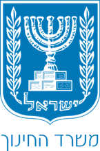
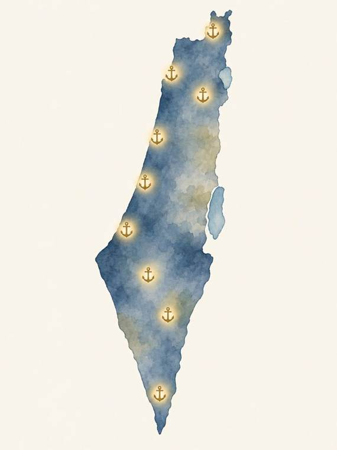
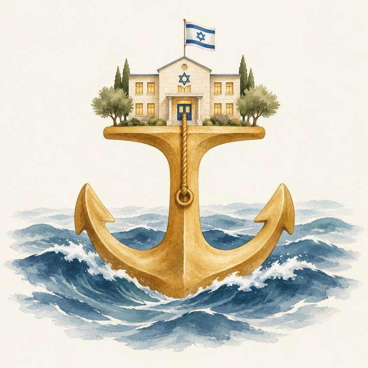
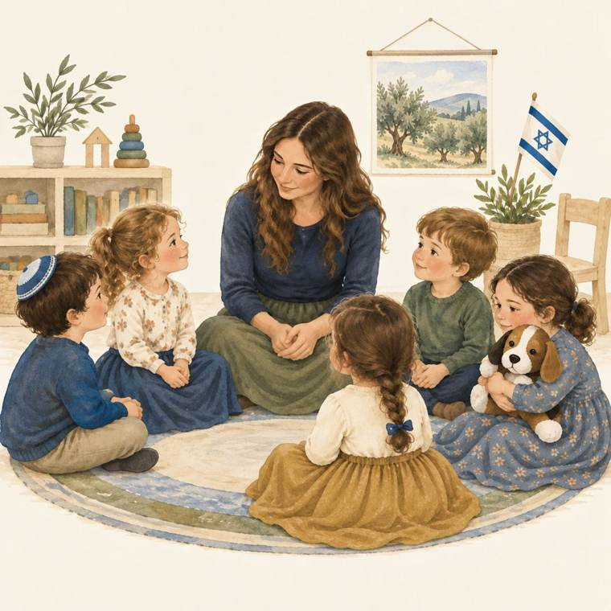

משרד החינוך | המנהל הפדגוגי | אגף בכיר שירות פסיכולוגי ייעוצי | בשיתוף אגף הביטחוןתמונת עשייה תשפ"ג–תשפ"ו ומבט לתשפ"ז. בחרו שנה בפס העליון כדי לסנן.

"העיסוק בשגרה מתוכנן ברובו. החירום, לעומת זאת, מפתיע ואינו מתוכנן."

לפני האירוע: הכשרה, תרגול, תיק צל"ח, חוסן
בעת האירוע: ניהול בשני ערוצים, סיוע מציל חיים וסיוע חינוכי רגשי, שעת הזהב
אחרי האירוע: ליווי ארוך טווח, חיבור רציפויות, הפקת לקחים
היערכות מטרימה של הצל"ח מאפשרת לתלמידים תחושה שרציפות החיים נמשכת, ומפחיתה את הסיכון להתפתחות תסמיני מצוקה נפשית.
בכל עוגן אותו מודל: ידע, תרגול בסימולציה, הפקת לקחים, ליווי.
אגף הביטחון במשרד החינוך | האגף לגיל הרך | פיקוד העורף | רשויות מקומיות וקב"טים | פיקוח כולל ופיקוח על הייעוץ | שפ"ח | מדריכות חירום מחוזיות
מאחורי הכנסים וההטמעות עומד מערך קבוע של הכשרה, ידע ותרגול. כל פריט מסומן בשנה שבה נוסד.

קרית אונו, נובמבר 2024: 300 גננות וסייעות מ-69 גנים מתרגלות יחד סימולציית ירי טילים. המטרה: למתן את תחושת הבדידות של הגננת, לחזק את המסוגלות שלה ולתת לה כלים.
הטמעה כפולה: מפגש ראשון עם צוות הצל"ח, מפגש שני עם כל הצוות החינוכי. סימולציה מתגלגלת של רעידת אדמה, פח"ע או תאונת אוטובוס, ובסופה הערכת מצב: מה אני יודע? מה אני מבין? מה אני עושה?
שבוע חירום, מרץ 2025: כ-25 מפגשי הכנה בשבוע אחד, מצפון ועד אילת, בזום ופנים אל פנים, ואחריהם תרגיל ארצי בכל מוסדות החינוך. אותה שפה, אותם תדריכים, אותה סימולציה.
תוכנית עבודה מחוזית משובצת עד אביב 2027 בכל המחוזות
ניוזלטר חודשי לצוותי הצל"ח: ליווי לאורך השנה, מבניית הצוות ותיק הצל"ח בספטמבר ועד הפקת הלקחים ביוני
המשך הרחבת צל"ח גנים והעמקת שמירת הכשירות